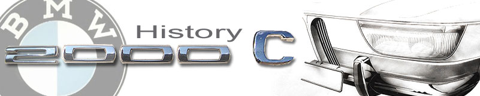
BMW 1959: Do or Die
click images to enlarge
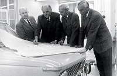
{kind=link}
1960 - 1965: A New BMW Coupe
The final member of the modernization effort was chief stylist Wilhelm Hofmeister (pictured left, above) who would spin the team’s vision into a beautiful design. Beginning perhaps as early as 1959, his design staff led by some notable Italian designers, created two bold and cutting edge cars. Both seemed diametrically opposed in every respect. One was the coach built, limited production V8 powered 3200cs coupe designed by the legendary Nuccio Bertone and his apprentice Giorgetto Giugiaro. The other was the 1500 “Neue Klasse” sedan. Both ca
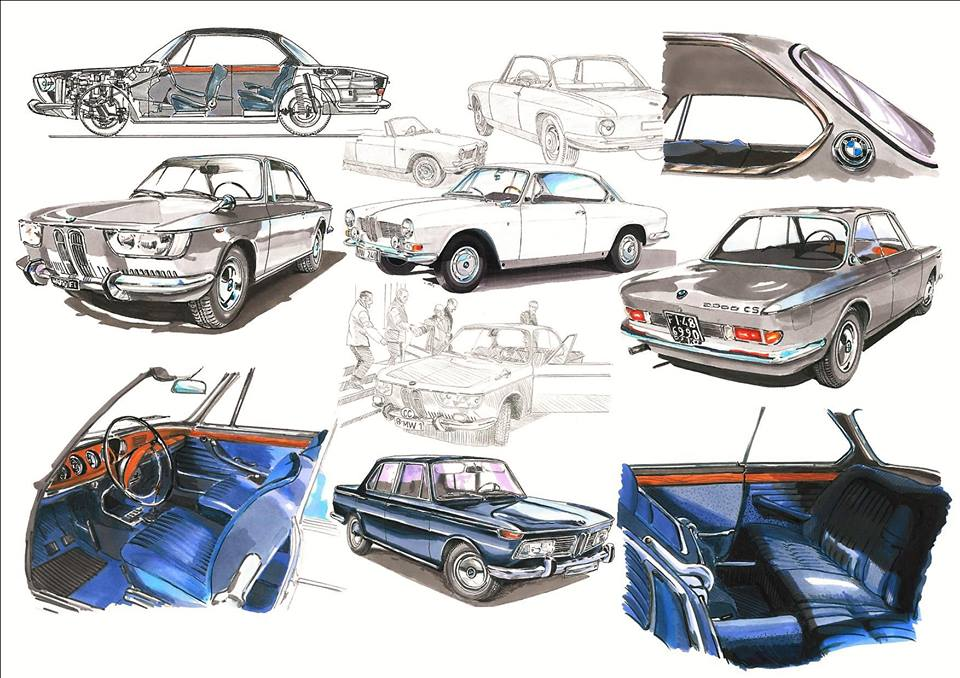
rs made their debuts in 1961. The typ120 would be a synthesis of both.Wilhelm Hofmeister and his new design team set out to create a coupe around the new Wolff unibody concept already used with great success in the 1500 sedan. They also designed to include the the von Falkenhausen four cylinder power plant. The 2000c/cs was born.
Production commenced in June 1965. Over a span of 4 years roughly 13,691 cars were produced with 1966-1968 being the true production years. A few cars were produced in 1969, but by then BMW was phasing out the typ120 CS model for the slightly redesigned e9 2800cs complete with a more familiar BMW front end makeover and a 6 cylinder power plant.
The typ120 was no slouch. The 2000cs version ran two Solex side draft carburetors and a higher compression 125hp M10 4 cylinder engine. In 1965, the car was revolutionary with impressive performance including acceleration from zero to 60 at roughly 11 seconds, and a top speed of 115 mph. BMW’s focus with the car was a balance of comfort and luxury combined with performance. In keeping with “coach built” quality, body assembly was outsourced to the Karmann factory in Osnabrück end eventually finalized and fitted in Munich. Of all the Neue Klasse models, the typ120 showed a heightened dedication to craftsmanship and attention to detail. The interior was adorned with carefully crafted chrome, leather, wool carpets and walnut veneer appointments. Components were meticulously hand assembled. BMW’s price tag for the 1965 2000cs was an ambitious £3360/$4200 compared to Jaguar’s price tag for the 1965 E-type at £2245/$2800. Ironically a pristine 2000cs today is worth roughly about $50,000 compared to a pristine E-type valued at $100,000 - $200,000.
The BMW type 120 Design Story
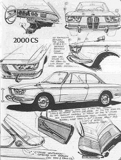
{kind=link}
By the 1963 - 4, Several Manfred Rennen drawings of the typ120 appear. Although still primitive and divergent from the overall final design, they nonetheless introduce the distinctive signature long kidney grills and “cat’s eye” headlight front end. Rennen may be the creative force behind the typ120’s “conversation provoking” front end working from a Michelotti's first design.
{kind=link}
Wilhelm Hofmeister
Wilhelm Hoffmeister was masterful at assembling skilled design teams in pursuit of new car designs. Under his direction, as many as 5 artist-draftsmen were busily creating, drafting, and modeling. Nuccio Bertone and Giorgetto Giugiaro designed the 3200cs in 1961 which established the vision for an open-air coupe with the C-pillar kink and the signature roundel. Neither directly worked on the typ120 CS, but their 32000cs most likely influenced the vision for the car that Hoffmeister desired. Interestingly, Giugiaro would later go on to create the BMW M1 design in 1978. Giovanni Michelotti led the typ120 design effort. Manfred Rennen and Georg Bertram were also involved on some level. Michelotti would later contribute substantially to the 1600/2002 design as well. Rennen would later contribute to the design of the 2002 touring in 1971 and the stylish e12 first generation 5 series in 1975.
It is easy to envision Wilhelm Hofmeister's BMW design shop in the early 1960s as a busy place. In 1961 alone he had teams busily working away on at least 3 and maybe 4 epic designs to include the 3200cs, 1500 sedan, the typ120 2000c/cs and most likely prototype for the typ114 1600/2002. The general concept of the iconic 1968-76 2002 arguably first saw life on paper based on a 1961 Giovanni Michelotti draft. Georg Bertram is noted as the designer who drafted the typ114 1600/2002s that would go into production.
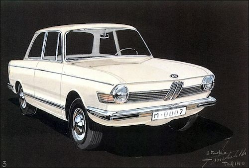
Giovanni Michelotti
It is surprising to ocassionally hear some seasoned and respected vintage BMW enthusiasts express doubts regarding the level of Giovanni Michelotti's presence at BMW in the early 1960s. Blame in part can be assigned to numerous poorly (lazily, hastily) researched web-based and printed publications over the decades that simply state "Wilhelm Hofmeister designed any given car". There is no doubt Hofmeister was the "man with the plan" and set the vision for all of the cherished BMW models of the 1960s.
Disagreements regarding Giovanni Michelotti's design presence at BMW shall be heretofore laid to rest based on the following narrative. Careful research of published works by respected scholars and authors unequivocally establishes Michelotti as the dominant design presence at BMW in the 1960s. BMWism denotes "Wilhelm Hofmeister was more a skillful manager than a 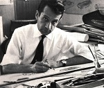
{kind=link}
Actually, Giovanni Michelotti's presence at BMW is noted as early as 1955. Tony Lewin, editor for Automotive News Europe, in his book BMW Century: The Ultimate Performance Machines reflects on the 1955 Frankfurt Auto Show and the debut of the BMW 505 "with formal design and styling by Giovanni Michelotti"(1). From 1957-1959 the very rare BMW 3200 Michelotti Vignale prototype was also introduced as a possible successor to the Albrecht von Goertz's early 50's stunning 507. Also, in 1959 the BMW 700 "with attractive lines penned by designer Giovanni Michelotti"(2) made its debut as noted by historian and journalist James Taylor's BMW Z3 and Z4: The Complete Story.
Michelotti and the Neue Klasse
Giovanni Michelotti was arguably a dominate presence within Wilhelm Hoffmeister's design shop during the creation of the "Neue Klasse". Markus Caspers, Professor for Design and Media at the Hochschule Neu-Ulm and Lecturer at the Folkwang University of the Arts notes in his book Designing Motion: Automotive Designers 1890 to 1990 [that] "in 1959 under Chief of Design, Wilhelm Hoffmeister, Giovanni Michelotti worked on the 'new class' BMW 1500, and later the BMW 2002." Caspers goes on to state that "[in 1962] the 1500 [with] the trapeze shape had been introduced at BMW by Giovanni Michellotti."(3)
Respected and award winning automotive author Lance Cole, goes into detail in his book The Classic Car Adventure: Driving Through History on the Road to Nostalgia. He notes that "Michelotti also drew the early BMW 'shark front' saloons including the 2000 and in doing so, set a BMW design motif of the lean-forward or reverse-slope grille and front valance with framed headlamps."(4) Andrew Nahum principal curator of Technology and Engineering at the London Science Museum and research tutor in the Department of Vehicle Design at the Royal College of Art corroborates Cole in his book Fifty Cars That Changed the World. He states that "the key to BMW's present identity can quite clearly be found in the work of Giovanni Michelotti. BMW tried mid-sized projects which came of age with the handsome 1962 Neue Klasse 1500 for which Michelotti provides the characteristic geometrical architecture.."(5)
Sam Dawson, Editor at the Bauer Media Group and Classic Car Magazine in Hamburg concludes in his book GT: The World's Best GT Cars 1953 to 1973, that "the 2000cs was a pretty, Michelotti-styled, resolutely European styled car".(6) Dawson corroborates his conclusion with BMW Pressgruppe.
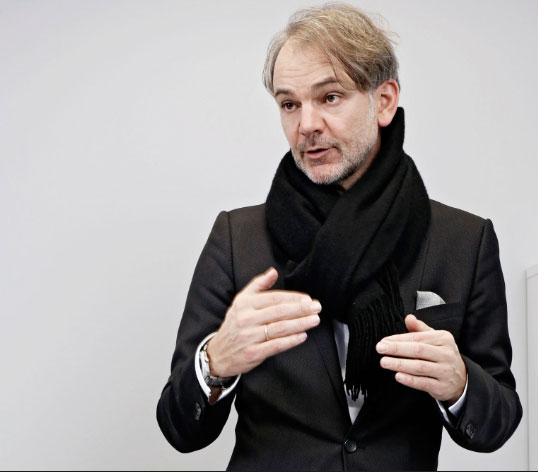 |
Adrian van Hooydonk |
Adrian van Hooydonk, BMW Group’s present-day Design Director (2020), pretty much lays to rest any controversy regarding Michelotti's presence. He corroborates the historical documentation of who did what and when in the publication A Look Inside the BMW Design Archives. He notes that “BMW didn’t really have a design department; design, if you could call it that, it was part of carrosserie (body engineering), [For the Neue Klasse in late 1959] an outside consultant from Italy, the legendary Giovanni Michelotti, did first sketches and then collaborated with Wilhelm Hofmeister, who influenced the kink in the rear quarter that is now a fixture in BMW’s design vocabulary.”
The Hofmeister Kink: A Lasting BMW Design Detail
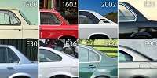
{kind=link}
2000c/cs/ca Influence & the 1961 BMW 1600/2002 Prototype
A Michelotti draft of what strongly resembles what would become the two door version 1600-2/2002 dates to 1961. Adrian van Hooydonk clarifies that "Georg Bertram was the originator of the 2002 design...you see the detail in the sketch, and that's exactly how the car turned out."
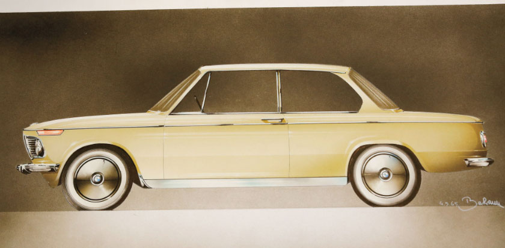
Georg Bertram's design for the typ114 BMW 1600/2002
Adding mystery to the equation, a rare photo of a prototype for the BMW 1600-2 in 1964 initially appeared with the rear end and signature tail lights of the 2000c/cs. The first prototype car(s) have been noted to have a "Karrosserie Michelotti" badge on the trunk (or rear).
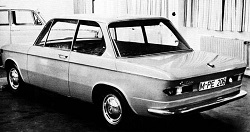 |
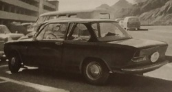 |
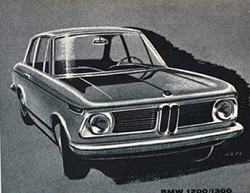 |
{kind=link}
{kind=link}
{kind=link}
Special thanks to Hans Wortelboer for archival images & historic research/support
Willi Martini's 1600cs
The above prototype photos are easily confused with Willi Martini's 2000c/cs inspired creation. In 1966-67 Martini combined the body work of the BMW 1600-2 and 2000CS, added twin carburetors to his race-tuned 1.6 liter engine with varying end results that ranged from 108 hp (80.5 kW) to 147 hp (110 kW) as opposed to the 1.6 liter engine's original 85hp (63 kW).
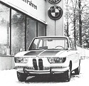 |
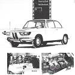 |
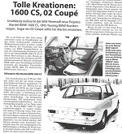 |
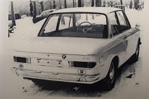 |
{kind=link}
{kind=link}
{kind=link}
{kind=link}
Footnotes
(1) Lewin, Tony. The BMW Century: The Ultimate Performance Machines. Minneapolis: Quarto Publishing Group. 2016
(2) Taylor, James. BMW Z3 and Z4: The Complete Story. London. Crowood Press UK. 2017
(3) Caspers, Markus. Designing Motion: Automotive Designers 1890 to 1990. Basel: Birkhäuser Verlag, 2016.
(4) Cole, Lance. The Classic Car Adventure: Driving Through History on the Road to Nostalgia. Barnsley, Pen and Sword Books Ltd., 2017
(5) Nahum, Andrew. Fifty Cars That Changed the World: Design Museum
Enterprise Limited, London: Octopus Publishing, 2009
(6) Dawson, Sam. GT: The World's Best GT Cars 1953 to 1973. Dorchester: Veloce Publishing Limited., 2007